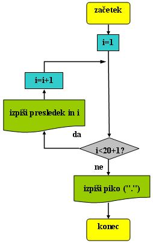
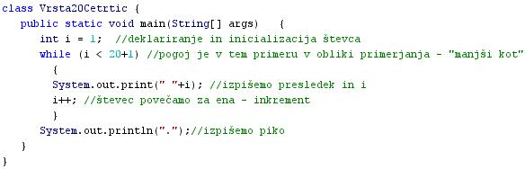
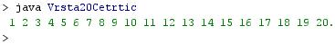

SINTAKSA IN SEMANTIKA
- Sintaksa
- Sintaksa je nabor pravil pisanja programa.
- Sintaksa programskega jezika opisuje predpisane kombinacije simbolov.
- Te predpisane kombinacije simbolov (stavkov in ukazov) tvorijo pravilno zapisan program.
- Pomen posameznih gradnikov (simbolov, ukazov, stavkov)je doloèen s semantiko programskega jezika.
- Sintaktièna pravila doloèajo pravilno strukturo programa in njegovih posameznih simbolov, ukazov ali stavkov.
- Precej programskih jezikov je tekstualnih ali besedilnih.
- To pomeni, da so njihovi ukazi sestavljeni iz besed ali zaporedij besed, ki jih najdemo v èloveških jezikih (angleškem jeziku).
- Besedilni ali tekstualni programski jeziki vsebujejo tudi števila in loèila, torej so rahlo podobni èloveškim jezikom.
- Semantika
- Semantika so pravila, ki doloèajo pomene posameznih elementov programskega jezika.
- Elementi programskega jezika so stavki, ukazi, loèila.
- Vedeti moramo, da pravlna sintaksa še ni zadosten pogoj za delovanje programa.
- Ukazi, ki jih program vsebuje, morajo imeti tudi smiselne pomene.
- Ukaz ima smiselni pomen, èe resnièno omogoèa izvajanje operacij, ki uèinkovito prispevajo k izvedbi naloge, za katero je program napisan.
- Tudi pri "èloveških" jezikih se lahko pripeti, da je stavek kljub pravilnosti z vidika slovniènih pravil nesmiseln in neuporaben.
- Primer takega stavka bi lahko bil tudi: "Brezbarvne zelene ideje togotno zidajo hišo."
- Še en primer: "Janez je oženjen samski moški."
- V primeru sintaktièno pravilnih, toda semantièno nepravilnih stavkov se programi in raèunalniki vedejo nepredvidljivo.
- V takih primerih lahko prihaja do napak tako v fazi prevajanja izvirne kode v strojno kodo, kot tudi v fazi izvajanja programa.
- Pri programskih jezikih poznamo dve vrsti semantike:
- Statièna semantika doloèa tiste omejitve strukture programa, ki jih je težko ali celo nemogoèe izraziti s pomoèjo sintakse. Najpogosteje zadeva statièna semantika podroèje doloèanja tipov podatkov.
- Izvršna semantika programskega jezika doloèa, na kakšen naèin vplivajo posamezni elementi programskega jezika na delovanje programa.
- Primer:
- Besedni opis problema in rešitve.
- "Zapiši po vrsti števila od 1 do 20 v isti vrsti, med njimi pa naj bo en presledek": Vprašamo se, kaj vse bomo morali postoriti za rešitev problema in to opišemo v nekaj stavkih. Potek reševanja problema poskusimo premisliti èim bolj natanèno.
- Ker gre za ponavljanje, bomo izbrali zanko.
- Zaèetna vrednost števca zanke je 1.
- Èe je števec manjši od 20+1, izpiši presledek in vrednost števca ter poveèaj števec za 1.
- Èe števec ni manjši od 20+1, prekini zanko in izpiši še piko.
- Diagram poteka
- "Zapiši po vrsti števila od 1 do 20 v isti vrsti, med njimi pa naj bo en presledek":

VAJA 40:
- V okolju za pisanje izvorne kode v jeziku Java, za prevajanje in za interaktivno delo zapiši zgornji program "Vrsta20Cetrtic". Pomagaj si s sliko.
- Kodo lahko tudi kopiraš iz te datoteke in jo prilepiš v okolje, v katerem pišeš programèke. Pozor: koda, ki jo boš kopiral/a, vsebuje eno, dve, tri ali štiri napake. Èe želiš, da bo program deloval, moraš napake odkriti in jih odpraviti.
- Izvorno kodo shrani pod imenom "ImePriimek40.java". ImePriimek je seveda tvoje lastno ime in priimek.
- Datoteko "ImePriimek40.java" prevedi.
- Prevedeno datoteko zaženi, preveri rezultat v interaktivnem oknu in poklièi profesorja, da vidi rezultat.
- Preriši diagram poteka v tej uèni enoti v zvezek.
1. Vprašanja:
1. Kaj je sintaksa programskega jezika?
2. Kaj so tekstualni ali besedilni programski jeziki?
3. Kaj je semantika?
4. Kaj so elementi programskega jezika?
5. Zapiši dve vrsti semantike in obe vrsti kratko opiši.
6. Naštej elemente sintakse, ki jih najdeš v programu v tej uèni enoti.
7. Zapiši pomene elementov sintakse, ki jih najdeš v primeru te uène enote.
8. Ali lahko Javo uvrstimo v tekstualne oziroma besedilne programske jezike? Utemelji odgovor.
9. Ali lahko govorimo o statièni semantiki tudi pri Javi? Utemelji odgovor.
10. Razloži, zakaj sta zgornja primera stavkov z vidika semantike nepravilna.
11. Katero zanko smo uporabili v primeru te uène enote?
12. Koliko stavkov vsebuje zanka v primeru te uène anote?
2. Zapiši od ene do pet kljuènih besed, ki povzemajo vsebino te uène enote.
3. Povezave do dodatnih informacij.
Angleška verzija Wikipedije.
Spletni priroènik proizvajalca programskega okolja Java. To je podjetje Sun.
Gradiva na spletnih straneh fakultete za matematiko in fiziko v Ljubljani: Programski jeziki splošno
|